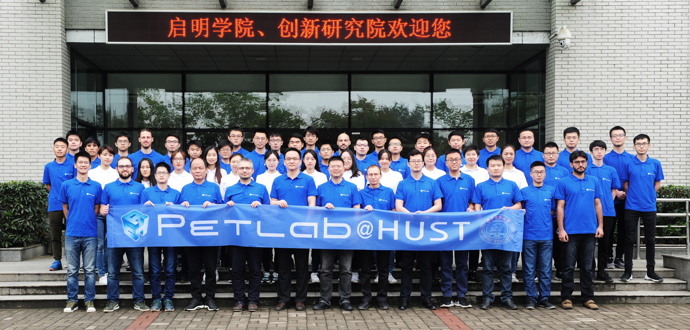

基础工作与模块化任务
承担基础性工作和模块化任务，在科研实践中锤炼能力，建立自律与责任意识。

人才培养
以科研实践为基础，以责任担当为驱动，让学生沿清晰、可晋升的成长路径，逐步成为能够独立思考、组织协作并推动成果的科研力量。
RA（Research Assistant）制度以选拔并激励具备浓厚学术热忱、扎实科研实践能力、高度责任心与主人翁意识，认同实验室愿景且勇于担当、善于成事的学生为宗旨，将RA作为实验室人才培养的核心载体。
六级体系
设置RA-1至RA-X六级体系，把学生的职责、能力与价值观综合纳入等级评定，并作为实验室资源配置的基本依据。清晰、可晋升的成长路径，激励学生在承担责任的过程中持续提升科研实践能力。
成长方向
引导学生从基础性工作和模块化任务出发，逐步拓展独立研究、团队协作、成果转化与人才培养的能力。
承担基础性工作和模块化任务，在科研实践中锤炼能力，建立自律与责任意识。
逐步走向独立构思课题、组建团队，把个人探索与协作研究连接起来。
推进项目申报与核心成果产出，将科研构想落实为具体研究工作。
推动成果向产业转化，培养后继人才，参与实验室人才梯队建设。
评审机制
制度通过自主申报、每年6月与12月集中评审、推荐信与支撑工作核验等方式，综合评定学生的职责、能力与价值观，引导学生持续成长。
学生通过自主申报参与RA等级评定。
每年6月与12月开展集中评审。
结合推荐信与支撑工作核验进行综合评定。
科研价值观
科研能力的成长与价值观的培养相互联系，贯穿实践、协作、成果转化和人才传承的全过程。
RA制度的核心意义，在于以清晰、可晋升的成长路径激励学生持续成长、勇于担当、善于成事，促进科研实践、团队协作、成果转化与人才梯队建设，实现实验室持续发展和学生个人价值提升的双赢。